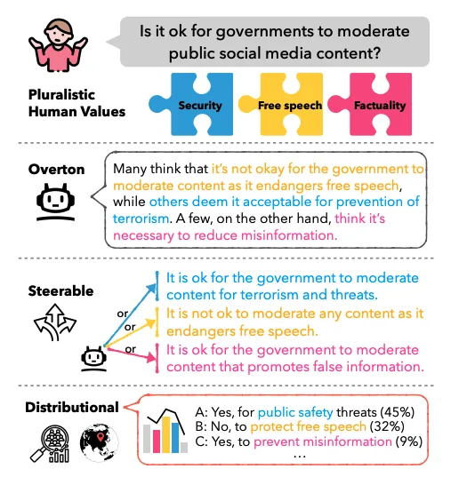

누구의 가치에 정렬할 것인가
김나연 · 2026년 9월 튜토리얼 기반
이 장의 목차
3.1 인간의 가치는 하나의 정답으로 주어지지 않는다
AI가 인간의 가치에 맞추어 행동해야 한다는 말에 동의하더라도, 구체적인 상황에서는 의견이 달라질 수 있습니다. 친구의 감정을 보호하기 위해 사실을 조금 다르게 말해도 될까요. 사람의 안전을 위해 표현을 제한할 수 있을까요. 개인화된 조언은 어디까지 허용해야 할까요. 같은 상황을 보고도 무엇을 더 중요하게 여기는지에 따라 판단이 달라집니다.
이는 인간이 아무 기준 없이 행동한다는 뜻이 아닙니다. 오히려 각자 나름의 이유와 경험을 가지고 판단하기 때문에 이견이 생길 수 있습니다. 어떤 사람은 정직성을 우선하고 다른 사람은 불필요한 상처를 피하는 배려를 강조할 수 있습니다. 같은 가치를 중요하게 여겨도 상황을 이해하는 방식이 다르면 결론이 달라집니다.
따라서 인간의 판단을 데이터로 수집할 때에는 단순히 가장 많이 선택된 답만 남길지 고민해야 합니다. 다수결은 필요한 도구일 수 있지만, 누구의 관점이 소수로 남았는지와 왜 의견이 달랐는지를 지워버릴 수 있습니다. 특히 가치 판단을 다루는 과제에서는 주석자 간 불일치 자체가 분석 대상이 됩니다.
이 장에서는 불일치를 모델링하는 Jury Learning, 여러 관점을 반영하는 Pluralistic Alignment, 기준 형성에 대중의 참여를 확대하는 Collective Alignment를 살펴봅니다. 세 접근은 같은 방법론이 아닙니다. 각각 다른 수준에서 “누구의 판단을 어떻게 반영할 것인가”라는 문제를 다룹니다.
3.2 같은 중립이라도 의미는 다를 수 있다
“친구의 마음을 상하게 하지 않으려고 거짓말했다”라는 상황을 생각해봅시다. 어떤 사람은 거짓말이라는 이유로 부정적으로 평가하고, 다른 사람은 상대방을 배려했다는 이유로 긍정적으로 평가할 수 있습니다. 이 판단들을 하나의 평균 점수로 바꾸면 가운데에 가까운 값이 나올 수 있습니다.
이번에는 특별한 맥락 없이 “파란색 셔츠를 입었다”라는 상황을 생각해봅시다. 많은 사람이 도덕적으로 좋거나 나쁘다고 평가할 일이 아니라고 판단할 수 있습니다. 이 경우에도 평균은 가운데에 가까울 수 있습니다. 하지만 두 경우가 담고 있는 정보는 같지 않습니다.
첫 번째는 평가가 양쪽으로 갈라진 상태입니다. 두 번째는 도덕적 중요성이 낮다는 데 비교적 동의한 상태입니다. 전자는 논쟁과 가치 충돌을 담고 있고, 후자는 평가의 비관련성에 가깝습니다. 이를 모두 ‘중립’이라는 하나의 레이블로만 저장하면 어떤 종류의 중립인지 알기 어렵습니다.
설명을 위해 다섯 단계 판단 척도를 가정해봅시다. 열 명 중 다섯 명이 강하게 부정하고 다섯 명이 강하게 긍정한 경우와, 열 명 모두가 가운데를 선택한 경우는 평균이 같을 수 있습니다. 하지만 분포는 전혀 다릅니다. 이 수치는 원 연구의 실험 결과가 아니라 집계 과정에서 무엇이 사라지는지 보여주기 위한 예시입니다.
이 차이는 모델의 답변 방식에도 영향을 줍니다. 의견이 크게 갈리는 상황이라면 어떤 가치가 충돌하는지 설명하는 것이 유용할 수 있습니다. 도덕적 판단이 거의 필요하지 않은 상황이라면 불필요한 도덕적 평가를 덧붙이지 않는 것이 더 적절할 수 있습니다. 같은 숫자 하나로는 이 차이를 안내하기 어렵습니다.
3.3 불일치를 보존한다는 것
주석자 간 불일치를 모두 오류로 간주하면 실제로 중요한 사회적 차이를 놓칠 수 있습니다. 어떤 표현을 공격적으로 느끼는지, 어떤 조언을 존중받는다고 느끼는지는 경험과 맥락에 따라 달라집니다. 피해를 자주 경험한 집단의 해석이 전체 다수의 해석과 다를 수도 있습니다.
그렇다고 모든 불일치가 가치 다원성을 뜻하는 것은 아닙니다. 문항이 모호하거나 주석 지침이 불명확해서 생기는 차이도 있습니다. 참여자가 문항을 오해했거나 충분히 읽지 않았을 수도 있습니다. 따라서 불일치를 보존하자는 주장은 데이터 품질 검사를 포기하자는 뜻이 아닙니다. 무엇 때문에 의견이 달랐는지 구분하자는 뜻입니다.
한국어 규범 판단 데이터를 만든다고 생각해봅시다. 존댓말을 사용했는지만으로 예의 바른 표현인지 판단하기 어려운 경우가 있습니다. 말하는 사람과 듣는 사람의 관계, 직전 대화, 발화 목적에 따라 같은 문장도 다르게 들릴 수 있습니다. 이런 맥락을 생략한 채 하나의 정답을 강제하면 데이터의 일관성은 높아져도 실제 언어 사용을 충분히 설명하지 못할 수 있습니다.
연구자는 최종 레이블과 함께 원 판단 분포를 보존하고, 필요하다면 판단 이유나 맥락 정보를 수집할 수 있습니다. 다만 인구통계적 속성이 개인의 가치관을 완전히 설명한다고 가정해서는 안 됩니다. 같은 연령이나 성별 집단 안에도 큰 차이가 있으며, 개인은 상황에 따라 관점을 바꿀 수 있습니다.
3.4 Jury Learning은 누구의 판단을 반영할지 묻는다
Jury Learning은 레이블을 다수결로 합치는 과정에 숨어 있는 선택을 드러내는 접근입니다. Gordon 등의 연구는 개별 주석자의 판단을 모델링하고, 어떤 사람들을 어떤 비율로 포함한 배심원단을 구성할지 명시적으로 정하는 방식을 제안합니다.[4]
유해 표현 분류를 예로 들면, 모든 주석자의 평균적인 판단만 따르는 대신 특정 사용 맥락에 적절한 배심원단을 구성해 예측을 살펴볼 수 있습니다. 배심원단 구성을 바꾸었을 때 결과가 얼마나 달라지는지도 비교할 수 있습니다. 이를 통해 분류기의 결정이 누구의 판단을 반영하는지 더 분명하게 묻습니다.
여기서 얻을 학습상의 핵심은 데이터 집계가 중립적인 자동 절차만은 아니라는 점입니다. 누구를 포함하고 어떤 비중을 주는지는 결과에 영향을 줍니다. 이 선택을 공개하면 그 적절성을 검토할 수 있지만, 공개했다는 사실만으로 구성이 공정해지는 것은 아닙니다.
독자는 배심원 비유를 실제 법적 배심원 제도와 동일한 것으로 받아들일 필요는 없습니다. 이 접근의 가치는 모델이 따라야 할 판단의 구성원을 명시적으로 다룬다는 데 있습니다. 정렬의 기준을 만드는 과정에도 설계자의 선택이 존재한다는 사실을 보여주는 사례입니다.
3.5 다원적 정렬의 세 가지 방향
다원적 정렬은 인간의 다양한 관점과 선호를 AI가 어떻게 반영할 수 있는지 묻습니다. Sorensen 등의 로드맵은 Overton, Steerable, Distributional이라는 세 방향을 제시합니다.[5] 이 구분은 서로 다른 시스템 목표를 이해하는 데 유용합니다.
Overton pluralism은 하나의 질문에 대해 여러 관련 관점을 포괄하는 방향입니다. 예를 들어 공개 게시물의 관리 문제를 다룰 때 표현의 자유를 중시하는 관점과 안전을 중시하는 관점이 각각 어떤 이유를 제시하는지 설명할 수 있습니다. Steerable pluralism은 사용자가 지정한 관점이나 선호에 따라 응답을 조정하는 방향입니다. Distributional pluralism은 대상 집단의 관점 분포를 반영하는 방향입니다. 다만 실제 분포를 주장하려면 그 집단을 적절하게 조사한 근거가 필요합니다.
이 구분을 학습 계획에 적용해봅시다. 어떤 학생은 짧은 시간에 핵심을 파악하고 싶고, 다른 학생은 시간이 걸리더라도 기초부터 공부하고 싶을 수 있습니다. 여러 학습 전략의 장단점을 제시하는 것과, 학생이 선택한 목표에 맞추어 계획을 조정하는 것은 서로 다른 기능입니다. 사람들이 어떤 전략을 선호하는지 조사 결과를 보여주는 것도 또 다른 기능입니다. 이 예시는 세 방향의 차이를 설명하기 위한 응용입니다.
다원성은 모델이 사용자의 모든 주장에 동조해야 한다는 뜻이 아닙니다. 틀린 사실을 원하는 관점에 맞추어 바꾸거나 타인에게 해를 주는 요청을 정당화하는 것과는 구분해야 합니다. 관점에 따라 달라질 수 있는 부분과 사실적 근거로 확인해야 하는 부분을 나누는 능력이 중요합니다.

3.6 집단적 정렬은 기준을 정하는 과정에 참여를 넓힌다
다원적 정렬이 모델이 여러 관점을 어떻게 반영할지에 관심을 둔다면, 집단적 정렬은 모델의 행동 기준을 정하는 과정에 누구를 참여시킬지에 주목합니다. 개발팀이 모든 기준을 내부적으로 정하는 대신, 영향을 받는 사람들의 의견을 수집하고 검토해 정책에 반영하는 방향입니다.
OpenAI가 2025년에 공개한 Collective Alignment 작업은 대중의 의견을 모델 행동 지침과 비교하고 그 차이를 검토한 사례입니다.[6] 이 사례에서 중요한 것은 참여자의 의견을 받았다는 사실뿐 아니라, 어떤 의견이 실제 기준 수정으로 이어졌는지 살펴보는 일입니다.
학습용 사례로 대학의 AI 조교를 생각해봅시다. 개발자는 답변의 정확성과 효율성을 중요하게 여길 수 있습니다. 학생은 질문을 편하게 할 수 있는지와 자신의 정보가 어떻게 다루어지는지를 걱정할 수 있습니다. 교수자는 학습이 실제로 일어나는지, 학생이 답을 그대로 제출하지 않는지 살펴볼 수 있습니다. 어느 한 집단의 의견만으로 시스템의 목적을 모두 설명하기 어렵습니다.
참여 절차를 설계할 때에는 누가 질문을 만들고, 누가 참여할 수 있으며, 누가 결과를 해석하는지 확인해야 합니다. 참여자 수가 많다는 사실만으로 모든 관점이 대표되는 것은 아닙니다. 의견을 제시하기 어려운 사람이나 직접 사용자는 아니지만 영향을 받는 사람도 고려해야 합니다.
또한 의견 수렴과 최종 결정 사이의 관계를 설명해야 합니다. 어떤 요구를 반영하지 않았다면 왜 그랬는지, 이후에 다시 검토할 수 있는지 알 수 있어야 합니다. 집단적 정렬은 선호 데이터를 많이 모으는 문제를 넘어 참여와 책임의 구조를 설계하는 문제입니다.
3.7 AI가 인간의 숙의를 도울 수 있을까
Habermas Machine은 AI가 여러 사람의 의견을 모아 공통된 입장을 형성하는 과정을 도울 수 있는지 탐구한 연구입니다. 참여자의 의견을 바탕으로 집단 입장문을 생성하고, 사람들이 이를 평가하거나 피드백하는 절차를 포함합니다.[7] 여기서 AI의 역할은 사람들을 대신해 최종적인 도덕적 판결을 내리는 것이 아니라 논의할 문장을 제안하는 데 가깝습니다.
연구실 공동 자원의 사용 규칙을 정하는 가상 상황으로 생각해볼 수 있습니다. 어떤 사람은 마감이 가까운 프로젝트를 우선해야 한다고 보고, 다른 사람은 모든 사람에게 일정한 사용 시간을 보장해야 한다고 봅니다. 또 다른 사람은 장비를 처음 사용하는 학생의 학습 기회를 걱정할 수 있습니다. 표면적인 요구는 다르지만 그 이유를 읽으면 공통된 관심과 실제 충돌 지점을 구분할 수 있습니다.
AI는 이런 이유들을 정리하고 합의 가능한 초안을 만드는 데 도움을 줄 수 있습니다. 다만 매끄럽게 작성된 문장이 반드시 공정한 합의를 뜻하지는 않습니다. 소수의 우려가 삭제되었을 수도 있고, 사람들이 문장을 이해하기 쉬워서 높은 점수를 주었을 수도 있습니다. 따라서 누가 어떤 이유로 동의하거나 반대했는지를 남기는 것이 중요합니다.
합의는 언제나 가능한 것도 아닙니다. 어떤 쟁점은 차이를 유지한 채 공존하는 절차가 필요합니다. 집단적 정렬의 목표를 모든 사람의 생각을 하나로 만드는 것으로 좁히면 다원적 정렬의 문제의식을 잃을 수 있습니다. 공통 기준을 만들되 남은 이견을 보이게 하는 것이 중요한 과제입니다.
이 장에서 가져갈 것
가치 판단의 불일치는 어떤 경우에는 보존해야 할 정보입니다. 다원적 정렬은 다양한 관점을 어떻게 표현하고 반영할지 묻고, 집단적 정렬은 그 기준을 정하는 과정에 누구를 참여시킬지 묻습니다. 두 접근 모두 판단의 기준과 결정 절차를 더 분명하게 드러내는 데 기여할 수 있습니다.
생각해 볼 질문 · 자신의 데이터셋에서 주석자들의 판단을 하나의 정답으로 합칠 때 무엇이 사라집니까. 그 정보 중 모델의 행동을 설계하는 데 필요한 것은 무엇입니까.